06/10/2026 · ramo misto-desenho-apagado (5fde0a8, 68d6c09, 2404d26, sobre b6e0a0e) · verificador independente.
PRONTO PARA JUNTAR, com ressalvas. No PDF processado o conserto faz exatamente o que o implementador disse: refiz a medida do zero, por outro caminho, e cheguei aos mesmos números, ponto por ponto, nas 59 páginas. Nada que o Misto existe para tirar voltou nessas 59 (nenhuma mancha do verso, nenhum fundo cinza), e o Preto e branco sem "Só as letras" não mudou um ponto. Mas três coisas precisam ser ditas ao Samuel antes de juntar:
E continuam valendo as duas queixas do Samuel ("Bom por enquanto"): no ljs47 p. 103 as linhas vermelhas compridas do diagrama continuam picotadas, e no Siebmacher p. 9 (direita) voltaram linhas da beirada da folha. Conferi as duas: são exatamente como ele descreveu.
Defeito conhecido (decisão do Samuel, 28/09): moldura dourada e iluminura são defeito conhecido até o fim da Fase 1 (itens 1.2, 1.4 e 1.5). Nada aqui muda isso.
| Item | Como | Resultado |
|---|---|---|
| 1. As 59 páginas do estudo, Misto de hoje × ramo | máquina + olho. Cada página por processo separado, uma por vez, pelo caminho do programa inteiro (análise, detecção de gravura, leitor de texto, Misto): um processo com o core/misto.py de hoje e outro com o do ramo, cada um com sua pasta de dados (nada dividido entre os dois). Olhei as 17 que mudaram, inteiras e de perto. |
Igual ao implementador, ponto por ponto: as mesmas 17 páginas mudam, com o mesmo número de pontos em cada uma; 42 idênticas. Nenhum ponto sumiu em nenhuma página; todo ponto que voltou também existe no Preto e branco puro. O aviso "Para revisar" e o "Tem cor" saíram iguais nas 59. |
| 2. Na janela real | olho, janela de verdade fora da tela, cliques por mensagem nativa do Windows, prints com PrintWindow. Livro de 2 páginas (Palatino 76 + Palatino 66); "Só as letras" ligado só na página 1, "Guardar a tinta forte"; processado até o PDF. |
PDF: página 1 ponto a ponto igual à minha medida do ramo (capitular inteira); página 2 (sem "Só as letras") ponto a ponto igual ao Preto e branco puro. Prévia: não mostra a capitular inteira (ressalva 1). Nenhum erro no erros.log. |
| 3. Livro fora do estudo | máquina + olho. Righetti (10 folhas = 20 páginas, girado e dividido como na rodada 2) mais 10 páginas de desenho do Palatino e da Rhetorica que não estavam nas 59. | 30 páginas: 18 melhoraram, 2 trocaram fundo limpo por grão cinza (ressalva 2), 10 idênticas. |
| 4. Testes de máquina | máquina, arquivo por arquivo. | 1615 passaram, 0 falharam (59 pulados, do OCR). teste_botoes.py numa cópia git archive: 132 ações, 0 falhas. |
| 5. Tempo do Misto | máquina, as 59 páginas, antes e depois alternados no mesmo processo, mediana de 3 voltas. | 94,5 s → 97,6 s (+3,4%). Mediana +0,025 s por página. |
Uma página do Antiphon (a maior, 38 milhões de pontos) falhou por falta de memória na primeira volta, enquanto os testes rodavam junto; refeita sozinha, passou. Não é deste conserto (a falta de memória foi numa conta comum do Misto), mas registro.
As palavras são minhas; os números batem com os do implementador em todas.
| Resultado | Páginas | O que vi |
|---|---|---|
| Melhorou bem (10) | Palatino 76, 67, 66, 9 e 113; Boécio 3; Opus majus 3; Rhetorica 129; Siebmacher 7 (esq.) e 9 (esq.) | A capitular S do Palatino 76 voltou inteira, com a paisagem; o fundo do M do 67 voltou; o "M." do rodapé do 66 voltou inteiro; o cavaleiro do Q (9) e o rolo de pergaminho (113) ganharam os traços claros; o escudo do carimbo e os raios do sol (Boécio 3), a hachura do selo (Opus 3), o pontilhado impresso do fundo (Rhetorica 129) e os arabescos do Siebmacher voltaram. Em todas, fica igual ao Preto e branco puro. |
| Melhorou em parte (1) | ljs47 103 | Os arcos do diagrama vermelho voltaram; as linhas horizontais compridas continuam picotadas (o que o Samuel viu). |
| Melhorou pouco (2) | Antiphon 88; Rhetorica 73 | Uma linha de pauta que faltava; a falha no fio da moldura fechou. |
| Diferença mínima (2) | Palatino 104; Rhetorica 160 | Poucos pontos num fio da tabela e no fio de baixo; na prática não se vê (se algo, é melhora). |
| Piorou de leve (2) | ljs47 26; Siebmacher 9 (dir.) | Pedaços da sombra da dobra (ljs47 26) e linhas da beirada da folha (Siebmacher 9 dir., o que o Samuel viu) voltaram, como no Preto e branco puro. |
| Idêntica, ponto a ponto (42) | as outras | - |
Procurei de propósito piora que o implementador não tivesse visto: mancha do verso, sujeira, papel cinza voltando. Não achei nenhuma nas 59. O "pontilhado" que volta na moldura do Palatino 66 e no fundo da Rhetorica 129 é impresso (está no original), não sujeira.
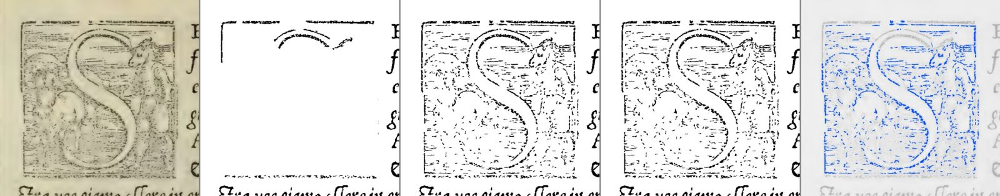
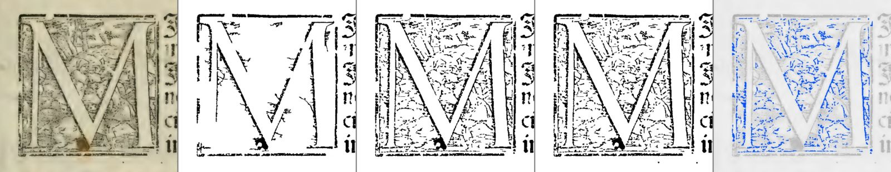
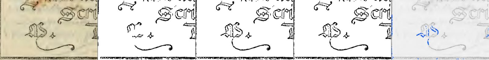
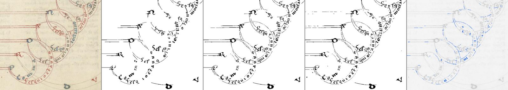
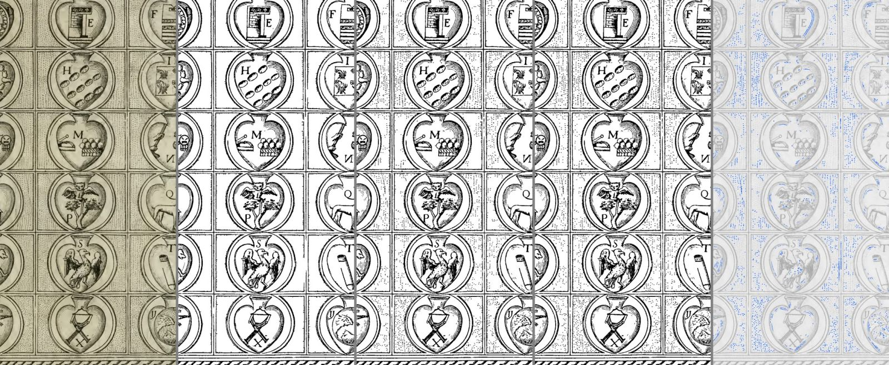
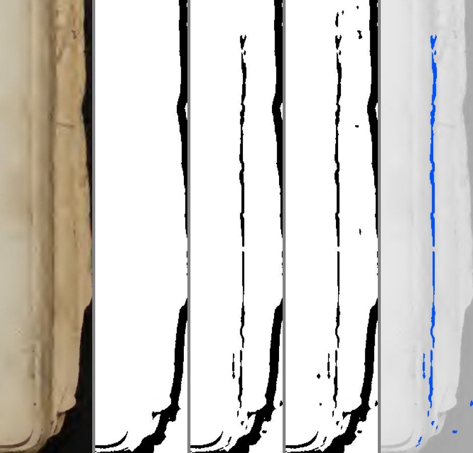
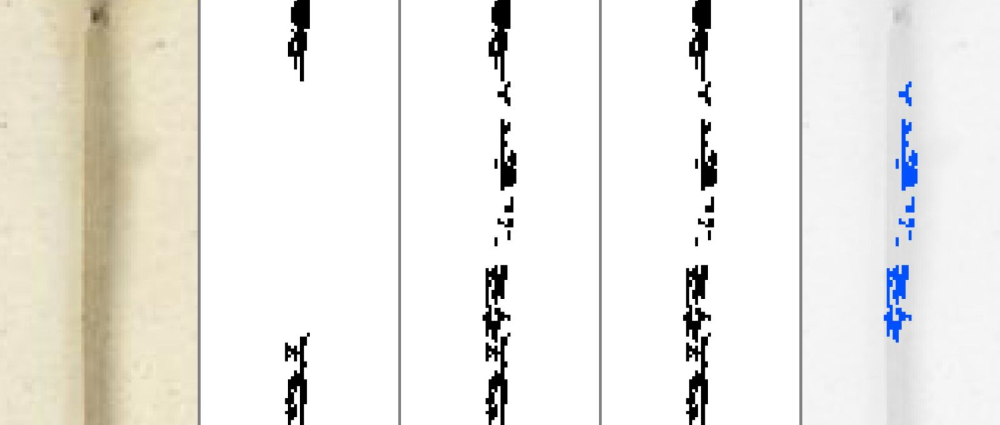
Abri uma instância nova do programa (a do ramo), fora da tela, sem tomar o mouse nem o teclado. Escolhi Preto e branco, entrei em Conferir, na aba Filtro liguei "Só as letras" só na página 1 (Palatino 76), com "Guardar a tinta forte"; a página 2 (Palatino 66) ficou sem "Só as letras". Processei até o PDF. Fechei a janela no fim (WM_CLOSE); nenhum processo ficou aberto.
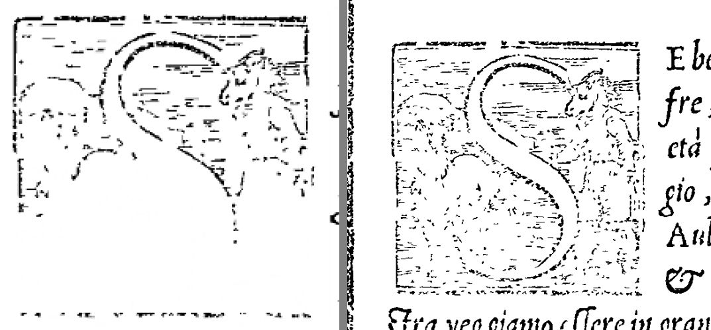
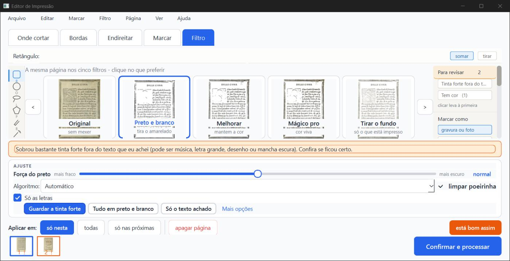
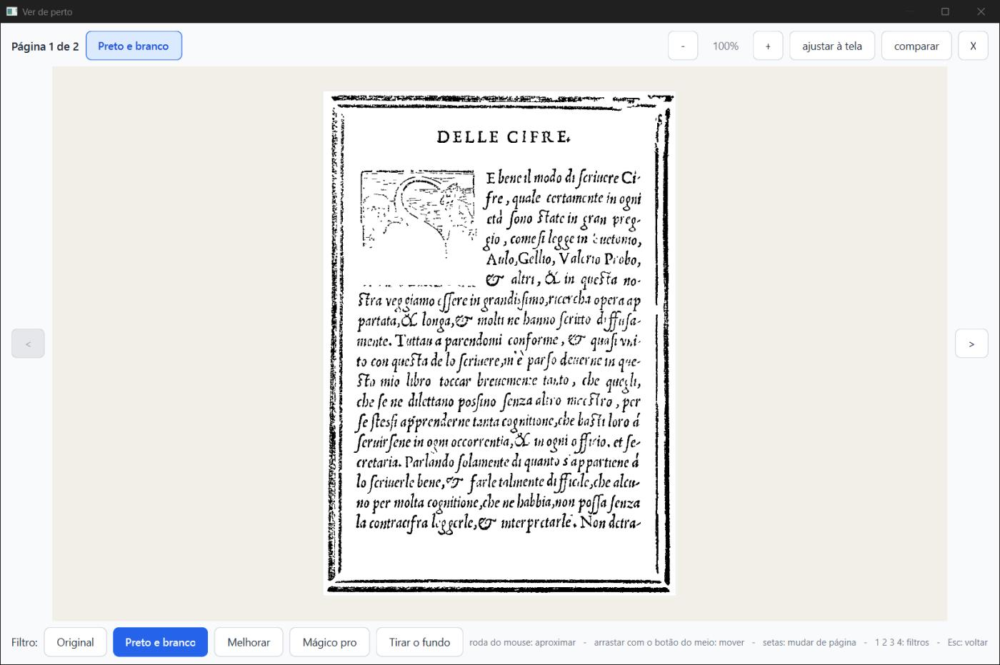
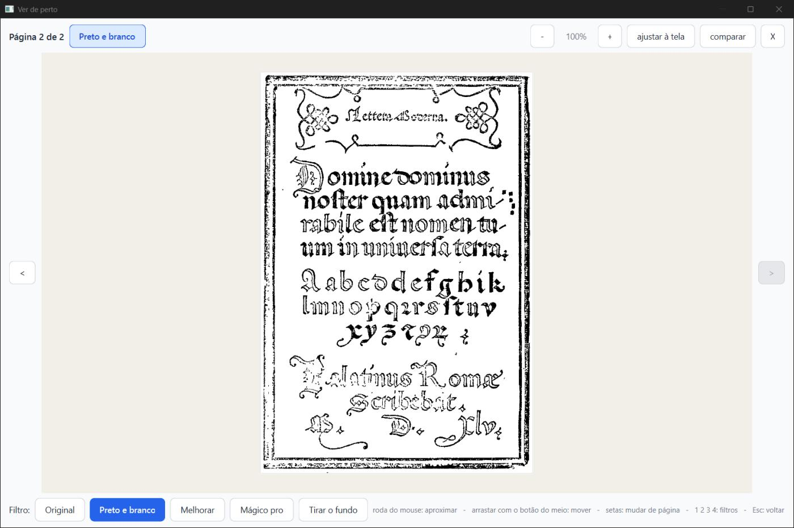
Por que a prévia é diferente. Refiz as 17 páginas que mudaram na resolução da prévia (150 pontos por polegada). Medi quanto da tinta que o Preto e branco puro tem a mais que o Misto de hoje o ramo devolve:
| Página | No PDF (300) | Na prévia (150) |
|---|---|---|
| Palatino 76 | 99% | 4% |
| Rhetorica 129 | 88% | 1% |
| Palatino 9 | 95% | 0% |
| Opus majus 3 | 98% | 5% |
| Palatino 66 | 96% | 23% |
| Boécio 3 | 90% | 28% |
| Palatino 67 | 81% | 37% |
Na prévia, o conserto quase não age. Parte disso já existia antes: na prévia, até o Preto e branco puro perde boa parte da hachura fina (a imagem tem a metade dos pontos). Mas, com o conserto, a diferença entre a tela e o papel ficou grande no Misto: o que o Kaique vê não é o que sai. No Palatino 76, a 150 pontos, só 2.450 pontos de tinta são "tinta de fora apagada" (o que a regra nova olha), contra uns 11 mil pontos de diferença para o Preto e branco puro: a maior parte do que falta na prévia nem chega à regra nova. Sugestão para a Lista de bugs (não é para este ramo): a prévia do Misto deveria mostrar o que o PDF vai mostrar.
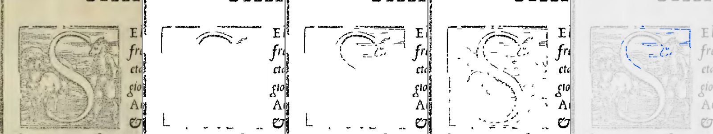
O Righetti (Historia de la Liturgia) é o único livro do acervo que não entrou no estudo. Peguei as 8 folhas com figura (6, 30, 50, 52, 54, 62, 64, 94) e 2 só de texto (27, 114): 20 páginas, giradas e divididas como na rodada 2. Como o Righetti tem fotos (meio-tom), e não gravura em madeira, peguei também 10 páginas de desenho do Palatino (31, 51, 59, 117, 126) e da Rhetorica (15, 38, 72, 112, 157) que não estavam nas 59. Olhei as 20 que mudaram.
| Resultado | Páginas | O que vi |
|---|---|---|
| Melhorou bem (10) | Palatino 31, 51, 59, 126; Rhetorica 15, 38, 72, 157; Righetti 50 e 52 (direita) | Capitulares gravadas inteiras (L, P, P, C, S, C), o céu e os raios da gravura da Rhetorica 38, a cártula do Palatino 31. Os dois mosaicos do Righetti (que a rodada 2 tinha dado como "errada": o meio do mosaico ralo, com buracos) voltaram iguais ao Preto e branco puro. |
| Melhorou (1) | Righetti 94 (direita) | O cálice ganhou traços; o pontilhado em volta continua indo para o branco. |
| Melhorou pouco (7) | Righetti 50 (esq.), 54 (os dois lados), 62 (os dois lados), 64 (dir.), 94 (esq.) | O fio fino debaixo do cabeçalho ficou inteiro. |
| Trocou: mais inteiro, mas com grão (2) | Righetti 6 (direita), 30 (esquerda) | Nas fotos de manuscrito, o grão cinza do fundo da foto voltou (como no Preto e branco puro). Em troca, no Righetti 6 voltaram pedaços de letras que o Misto de hoje comia. Eu chamaria de piora leve no 30 e de troca no 6. |
| Idêntica (10) | Palatino 117 e Rhetorica 112 (a gravura já é achada pelo detector), Righetti 6 (esq.), 27, 30 (dir.), 52 (esq.), 64 (esq.), 114 | - |
Conclusão: não parece decorado para o que o conserto quer pegar (capitular e gravura de traço: todas as dez páginas novas de desenho melhoraram, e a regra não errou nenhuma). Onde aparece o lado ruim é em foto de meio-tom (o grão da foto conta como "tinta clara colada na tinta forte"), um tipo de imagem que não estava nas 59.
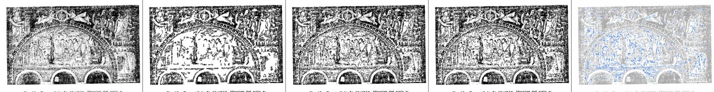
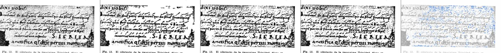
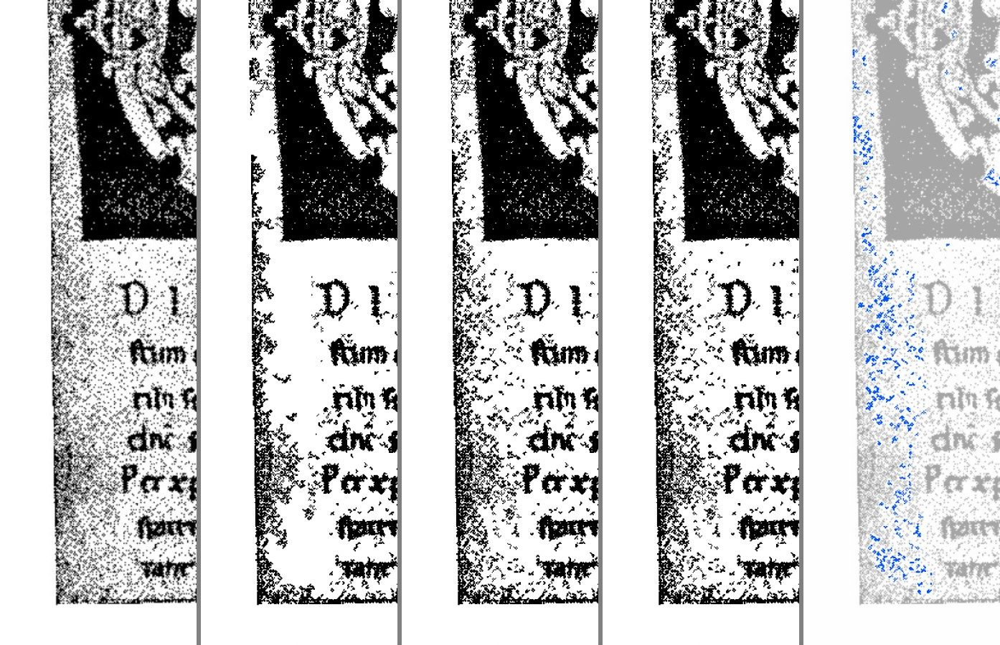
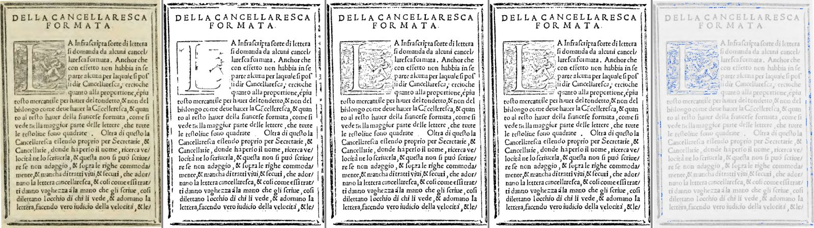
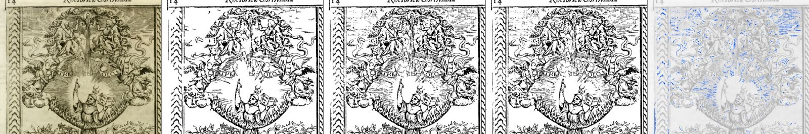
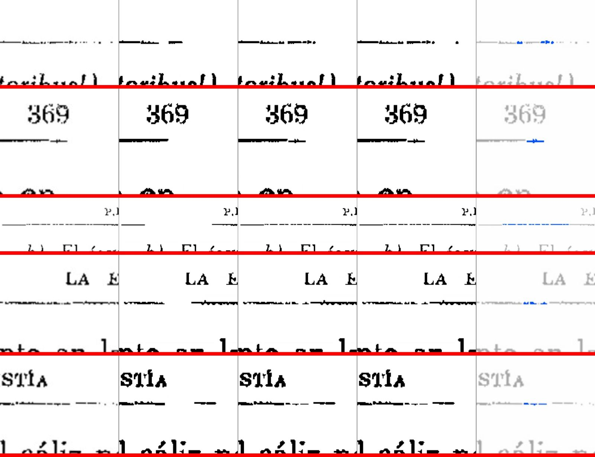
Arquivo por arquivo, no worktree do ramo (a máquina tem pouca memória; outro implementador trabalhava ao mesmo tempo).
test_misto.py 31, test_misto_desenho_claro.py 10, test_misto_consertos.py 25, test_misto_na_tela.py 14, test_misto_no_programa.py 23, test_misto_no_projeto.py 12, test_alerta_pb.py 5, test_preto_e_branco_regra_30_09.py 15, test_so_neste_pedaco_no_preto_e_branco.py 8, test_decoracao_no_preto_e_branco.py 12, test_filtros_algoritmos.py 10, test_filtro_com_selecao.py 22): 187 passaram.tests/ (78 arquivos): 1428 passaram, 59 pulados (OCR sem o motor), nenhum falhou.teste_botoes.py, numa cópia git archive do ramo, com a própria saida_teste: 132 ações, 0 falhas. (Sem a pasta modelos/ na cópia: ele testa a fiação dos botões, não o detector.)teste_velocidade.py) não foi rodado: ele mede abrir o livro, trocar de página e processar em Mágico pro e Preto e branco sem "Só as letras", e nada disso passa pelo código mudado. O tempo do Misto foi medido à parte (abaixo).As 59 páginas, o Misto de fábrica com as mesmas entradas, hoje e ramo alternados no mesmo processo, mediana de 3 voltas, máquina sem outra medida rodando:
imagens/previa-x-pdf-palatino76.jpg). Causa provável: a prévia é feita a 150 pontos por polegada e o PDF a 300; na prévia a regra nova quase não age, e até o Preto e branco puro perde hachura fina.relatorios/conferir/misto-desenho-apagado-2026-10-06/verificador/parecer-verificador.html (e .md, .pdf), imagens em verificador/imagens/.Editor de Impressão · gerado em 06/10/2026 às 17:19